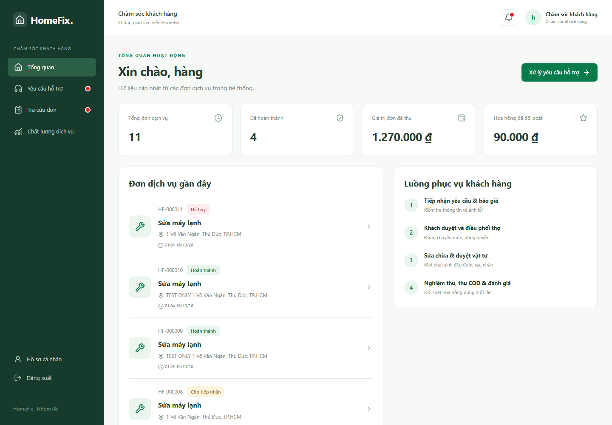

Chăm sóc khách hàng: xử lý hỗ trợ
- Mở Hỗ trợ hoặc danh sách công việc, lọc yêu cầu mới/còn xử lý.
- Đọc khách hàng, mã đơn liên quan, nội dung và ảnh được phép xem.
- Cập nhật sang đang xử lý, ghi nội dung liên hệ hoặc kết quả kiểm tra.
- Khi giải quyết xong, ghi kết luận rõ ràng rồi chuyển trạng thái phù hợp. Mỗi cập nhật cần lưu lịch sử.
- Dùng báo cáo chất lượng/hiệu suất để theo dõi phản hồi; không tự thay đổi thanh toán hoặc số dư ví.
Phản hồi nên nêu vấn đề đã xác minh, hướng xử lý và điều khách cần thực hiện. Nếu phát sinh tiền, chuyển thông tin cho kế toán theo đúng mã chứng từ. Khi hai nhân viên cùng mở một phiếu, tải lại nếu được báo phiên bản thay đổi.


Không gian chăm sóc khách hàng — bấm ảnh để xem kích thước gốc.